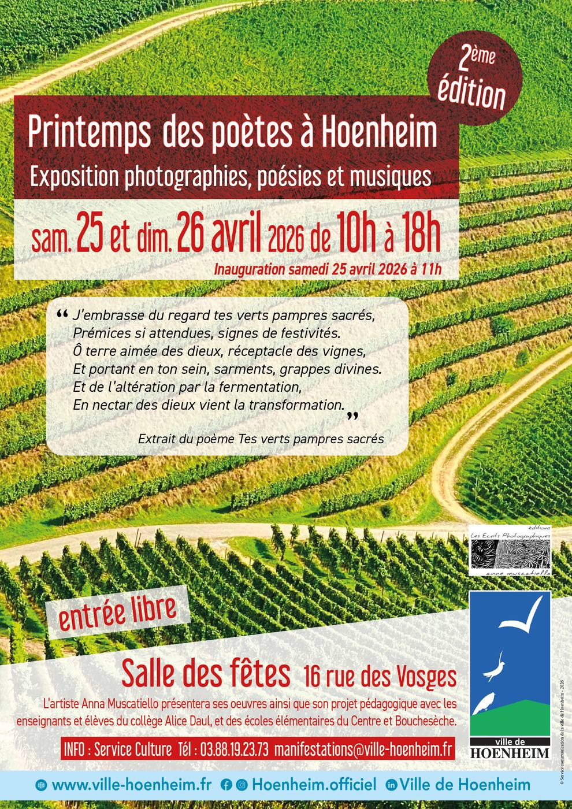

- Cet événement est terminé
Printemps des poètes à Hoenheim
26 avril à 10 h 00 min - 27 avril à 18 h 00 min
Navigation de l'événement

Pour la deuxième édition du Printemps des Poètes, la ville de Hoenheim accueille une exposition exceptionnelle mêlant photographie, poésie et musique, orchestrée par l’artiste Anna Muscatiello.
Dates : Samedi 25 et dimanche 26 avril 2026
Horaires : 10h – 18h
Lieu : Salle des fêtes de Hoenheim
Entrée libre
Au programme :
✨ Exposition des œuvres de l’artiste
📖 Présentation de son projet pédagogique réalisé en collaboration avec les professeurs et élèves du collège Alice Daul, et des écoles élémentaires du Centre et Bouchesèche.
🎤 Inauguration officielle en présence d’Anna Muscatiello samedi 25 avril 2026 à 11h
Venez partager un moment de créativité et d’émotion à travers cet hommage à l’art et à la poésie !